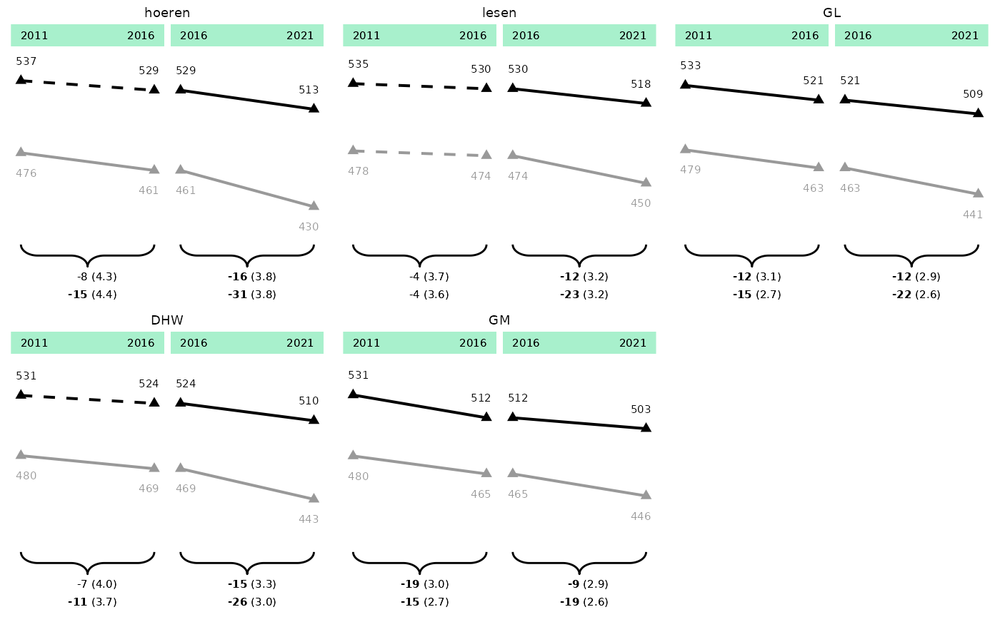
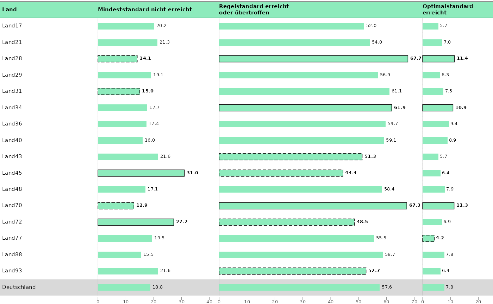
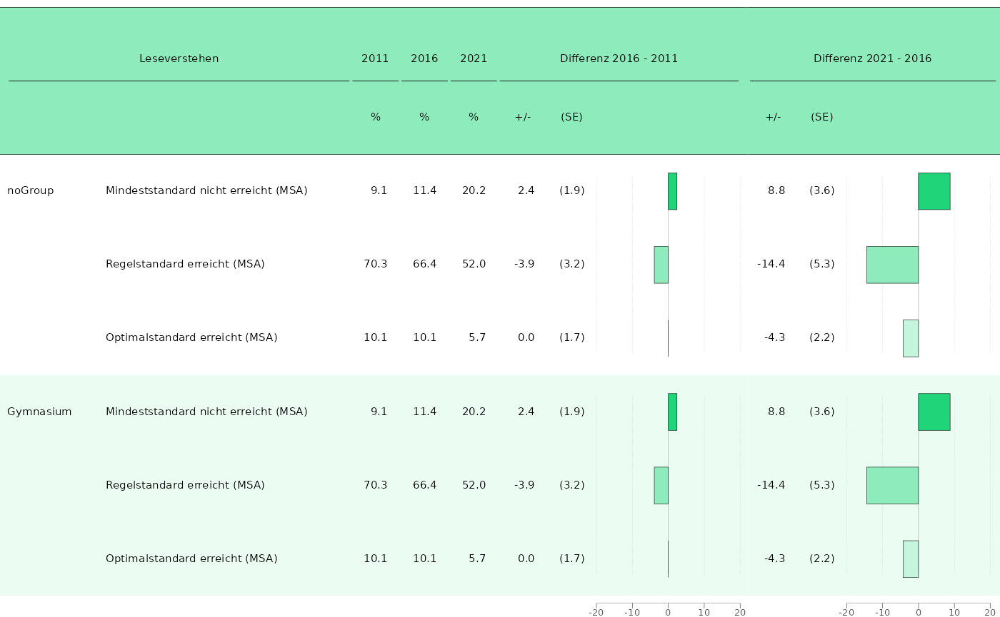
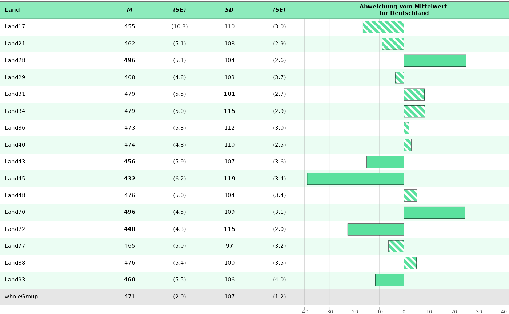

BT 22 example plots
bt22_plots.RmdACHTUNG: Schaut bitte selbst noch einmal genau, welche Spalten ihr
zum Plotten benötigt. Die Plots sind zur Veranschaulichung des Workflows
gedacht, es kann sein, dass ihr für bestimmte Kapitel andere Spalten
angeben müsst! Also vergleicht am besten noch einmal Stichprobenartig
mit dem eatRep output, dass es sich um die richtigen Werte
handelt.
Lineplots
Chapter 4
Kompetenzwerte Bundesländer
## Prepare the data with 'KBuecher_imp3' as grouping_var
plot_dat <- prep_plot(
dat = trend_books,
#comparisons = "crossDiff", # filter the needed comparisons to reduce ouput
competence = "GL",
grouping_vars = "KBuecher_imp3",
grouping_vars_groups = c("0", "1", "0.vs.1")
)
# Remove wholeGroup, as we don't want to plot it
plot_dat <- filter_rows(plot_dat,
column_name = "state_var",
subsetter = "wholeGroup",
remove = TRUE
)
p_line_states <- plot_lineplot(
plot_dat = plot_dat,
title_superscripts = list(
"Land-17" = "a",
"Land-45" = "3"
),
years_lines = list(c(2011, 2016), c(2016, 2021)),
years_braces = list(c(2011, 2016), c(2016, 2021)),
plot_settings = plotsettings_lineplot(
default_list = lineplot_4x4
)
)
p_line_states
save_plot(p_line_states, filename = "../split_plot_example.pdf")Kompetenzewerte Bundesländer with y-axis
## Prepare the data with 'KBuecher_imp3' as grouping_var
plot_dat <- prep_plot(
dat = trend_books,
comparisons = "crossDiff", # filter the needed comparisons to reduce ouput
competence = "GL",
grouping_vars = "KBuecher_imp3",
grouping_vars_groups = c("0", "1")
)
# Remove wholeGroup, as we don't want to plot it
plot_dat <- filter_rows(plot_dat,
column_name = "state_var",
subsetter = "wholeGroup",
remove = TRUE
)
p_line_states_y <- plot_lineplot(
plot_dat = plot_dat,
title_superscripts = list(
"Land-17" = "a",
"Land-45" = "3"
),
years_lines = list(c(2011, 2016), c(2016, 2021)),
years_braces = list(c(2011, 2016), c(2016, 2021)),
plot_settings = plotsettings_lineplot(
axis_y = TRUE,
axis_y_tick_distance = 50, # default is 20
axis_y_lims = c(340, 550), # If the second value is not reached by adding a multiple of axis_y_tick_distance to the first value, the next highest value that can be reached will be taken.
default_list = lineplot_4x4
)
)
p_line_states_y
save_plot(p_line_states_y, filename = "../split_plot_example_y.pdf")Kompetenzwerte Deutschland
## First we extract the wanted competence areas from the data:
plot_dat_kb <- trend_books[trend_books$kb %in% c("DHW", "GL", "GM", "hoeren", "lesen"), ]
## We can change the order by converting 'kb' into a factor and ordering the levels:
plot_dat_kb$kb <- factor(plot_dat_kb$kb, levels = c("hoeren", "lesen", "GL", "DHW", "GM"))
## Than we can prepare it with the according function:
plot_dat_test <- prep_plot(
dat = plot_dat_kb,
grouping_vars = "KBuecher_imp3",
grouping_vars_groups = c("0", "1", "0.vs.1"),
states = "wholeGroup"
)
## Here we change the seperate_plot_var - Argument to "competence_var", so the different competences are depicted in the tiles:
p_line_ger <- plot_lineplot(
plot_dat = plot_dat_test,
seperate_plot_var = "competence_var",
label_sig_high = NULL,
years_lines = list(c(2011, 2016), c(2016, 2021)),
years_braces = list(c(2011, 2016), c(2016, 2021)),
plot_settings = plotsettings_lineplot(
background_lines = FALSE,
default_list = lineplot_2x3
)
)
p_line_ger
## We dont't want a whole A4 page for this plot, but maybe the half:
save_plot(p_line_ger,
filename = "../adjusted_means_ger-v02.pdf",
height = 226.2 / 2 + 10
)Kompetenzwerte mit Gesamtdeutschland
## Prepare the data with 'KBuecher_imp3' as grouping_var
plot_dat <- prep_plot(
dat = trend_books,
comparisons = "crossDiff", # filter the needed comparisons to reduce ouput
competence = "GL",
grouping_vars = "KBuecher_imp3",
grouping_vars_groups = c("0", "1")
)
plot_dat <- gsub_plot_dat(plot_dat,
search_for = "wholeGroup",
replace_with = "Deutschland")
# Remove one country, so with Deutschland plotted, we still have a 4x4 matrix (just necessary for this example).
plot_dat <- filter_rows(plot_dat,
column_name = "state_var",
subsetter = "Land-17",
remove = TRUE)
p_line_states_de <- plot_lineplot(
plot_dat = plot_dat,
seperate_plot_var_order = unique(plot_dat$plot_lines$state_var), # here we can sort the plot
seperate_plot_var_box = "Deutschland",
title_superscripts = list(
"Land-17" = "a",
"Land-45" = "3"
),
years_lines = list(c(2011, 2016), c(2016, 2021)),
years_braces = list(c(2011, 2016), c(2016, 2021)),
plot_settings = plotsettings_lineplot(
seperate_plot_var_box_linewidth = 0.5,
default_list = lineplot_4x4
)
)
p_line_states_de
save_plot(p_line_states_de, filename = "../split_plot_de.pdf")Tables/Barplots
Chapter 3
Mindeststandards
dat_bar <- prep_plot(min_stand,
competence = "lesen",
parameter = "1"
)[["plot_tablebar"]]
#> Are you sure your data isn't grouped? If it is, but you didn't provide any grouping_vars, this might lead to duplicated rows in the prepared data.frames.
## Some columns have to be prepared manually (with convenience functions):
## wholeGroup should not be plotted in bold, so set to FALSE
dat_bar[dat_bar$state_var == "wholeGroup", grep("sig_", colnames(dat_bar))] <- FALSE
dat_bar <- construct_percent(dat_bar, columns = colnames(dat_bar)[grep("est", colnames(dat_bar))])
for (i in c("2011", "2016", "2021")) {
dat_bar <- construct_directional_sig(dat_bar, est_column = paste0("est_noTrend_Comp_crossDiff_wholeGroup_", i), sig_column = paste0("sig_noTrend_Comp_crossDiff_wholeGroup_", i))
}
## Replace wholeGroup with Deutschland
dat_bar <- gsub_plot_dat(dat_bar, search_for = "wholeGroup", replace_with = "Deutschland")
# Plot 1 ------------------------------------------------------------------
dat_bar_1 <- subset(dat_bar, depVar == "minVerfehlt")
p_bar_1 <- plot_tablebar(
dat = dat_bar_1,
bar_label = "est_noTrend_noComp_2021_percent",
bar_label_sig = "sig_noTrend_Comp_crossDiff_wholeGroup_2021",
bar_sig = "sig_noTrend_Comp_crossDiff_wholeGroup_2021_directional_sig",
headers = list("**Land**", "**Mindeststandard nicht erreicht**"),
columns_table = list("state_var"),
bar_est = "est_noTrend_noComp_2021_percent",
y_axis = "state_var",
plot_settings = plotsettings_tablebarplot(
axis_x_lims = c(0, 42), # Set a bit higher, so the last number isn't cut off.
columns_alignment = 0,
columns_width = c(0.45, 0.55),
headers_alignment = c(0, 0),
default_list = barplot_plot_frame
)
)
# Plot 2 ------------------------------------------------------------------
dat_bar_2 <- subset(dat_bar, depVar == "regErreicht")
p_bar_2 <- plot_tablebar(
dat = dat_bar_2,
bar_label = "est_noTrend_noComp_2021_percent",
bar_label_sig = "sig_noTrend_Comp_crossDiff_wholeGroup_2021",
bar_sig = "sig_noTrend_Comp_crossDiff_wholeGroup_2021_directional_sig",
bar_est = "est_noTrend_noComp_2021_percent",
headers = list("**Regelstandard erreicht <br> oder übertroffen**"),
y_axis = "state_var",
plot_settings = plotsettings_tablebarplot(
columns_alignment = 0,
headers_alignment = 0,
axis_x_lims = c(0, 72),
default_list = barplot_plot_frame
)
)
# Plot 3 ------------------------------------------------------------------
dat_bar_3 <- subset(dat_bar, depVar == "optErreicht")
p_bar_3 <- plot_tablebar(
dat = dat_bar_3,
bar_label = "est_noTrend_noComp_2021_percent",
bar_label_sig = "sig_noTrend_Comp_crossDiff_wholeGroup_2021",
bar_sig = "sig_noTrend_Comp_crossDiff_wholeGroup_2021_directional_sig",
bar_est = "est_noTrend_noComp_2021_percent",
headers = list("**Optimalstandard<br>erreicht**"),
y_axis = "state_var",
plot_settings = plotsettings_tablebarplot(
axis_x_lims = c(0, 25),
headers_alignment = 0,
default_list = barplot_plot_frame
)
)
# Combine plots --------------
minsta_plot <- combine_plots(list(p_bar_1, p_bar_2, p_bar_3))
minsta_plot
save_plot(minsta_plot, filename = "../Kap_3_MinSta.pdf", height = 226.2 / 3)Mindeststandards Trend
dat_bar <- prep_plot(min_stand,
competence = "lesen",
parameter = "1"
)[["plot_tablebar"]]
#> Are you sure your data isn't grouped? If it is, but you didn't provide any grouping_vars, this might lead to duplicated rows in the prepared data.frames.
dat_bar <- construct_percent(dat_bar, columns = colnames(dat_bar)[grep("est_|se_", colnames(dat_bar))])
dat_bar$depVar <- gsub("minVerfehlt", "Mindeststandard nicht erreicht (MSA)", dat_bar$depVar)
dat_bar$depVar <- gsub("regErreicht", "Regelstandard erreicht (MSA)", dat_bar$depVar)
dat_bar$depVar <- gsub("optErreicht", "Optimalstandard erreicht (MSA)", dat_bar$depVar)
## Order the data.frame:
dat_bar$y_axis_new <- paste0(dat_bar$state_var, dat_bar$depVar)
## Dummy-variable needed for sorting:
dat_bar$depVar_fac <- factor(dat_bar$depVar, levels = c(
"Mindeststandard nicht erreicht (MSA)",
"Regelstandard erreicht (MSA)",
"Optimalstandard erreicht (MSA)"
))
dat_bar <- dat_bar[order(dat_bar$state_var, dat_bar$depVar_fac), ]
## add a linebreak at the '-':
dat_bar$state_var <- gsub("-", "-<br>", dat_bar$state_var)
# Automatically calculate the column widhts for both plots.
# The first column will cover 9 % of the whole (combined) plot, the second 25 % and so on.
# The NAs indicates that in this column a barplot should be plotted, its width will be calculated automatically.
column_widths_stand <- standardize_column_width(
column_widths = list(
p1 = c(0.09, 0.25, 0.05, 0.05, 0.05, 0.05, NA),
p2 = c(0.05, 0.05, 0.05, 0.05, NA)
),
plot_ranges = c(40, 42) # Range of the x-axes of both plots set in 'axis_x_lims'.
)
## Calculate the relative pattern_spacing, so they are equal across both plots.
#bar_pattern_spacing_stand <- standardize_pattern_spacing(plot_ranges = list(c(-20, 20), c(-20, 22)))
# Plot 1 ------------------------------------------------------------------
## Only plot the first state respectively:
dat_bar$state_var[duplicated(dat_bar$state_var)] <- " "
p_bar_1 <- plot_tablebar(
dat = dat_bar,
bar_est = "est_Trend_noComp_20112016_percent",
bar_label = NULL,
bar_sig = "sig_Trend_noComp_20112016",
bar_fill = "depVar",
headers = list("**Land**", " ", "**%**", "**%**", "**%**", "*(SE)*", " "),
column_spanners = list(
"**2011**<sup>a<sup>" = 3,
"**2016**<sup>a<sup>" = 4,
"**Differenz 2016 - 2011**<sup>a<sup>" = c(5, 7)
),
columns_table = list(
"state_var",
"depVar",
"est_noTrend_noComp_2011_percent",
"est_noTrend_noComp_2016_percent",
"est_Trend_noComp_20112016_percent",
"se_Trend_noComp_20112016_percent"
),
columns_round = list(NULL, NULL, 1, 1, 1, NULL),
columns_table_se = list(NULL, NULL, NULL, NULL, NULL, "se_Trend_noComp_20112016_percent"),
columns_table_sig_bold = list(
NULL, NULL, NULL, NULL, "sig_Trend_noComp_20112016", NULL
),
columns_table_sig_high = list(
NULL, NULL, NULL, NULL, "sig_Trend_Comp_crossDiff_wholeGroup_20112016", NULL
), # ACHTUNG: Hier wird im BT22 trendDiffcross benötigt!
y_axis = "y_axis_new",
plot_settings = plotsettings_tablebarplot(
axis_x_lims = c(-20, 20),
columns_alignment = c(0, 0, 2, 2, 2, 2),
headers_alignment = c(0, 0, 0.5, 0.5, 0.5, 0.5, 0),
bar_pattern_spacing = 0.01, # calculated with standardize_pattern_spacing() down below
columns_width = column_widths_stand$p1, # Here we can use the widths calculated by standardize_column_width()
default_list = barplot_table_plot_pattern
)
)
#> Scale for pattern is already present.
#> Adding another scale for pattern, which will replace the existing scale.
#> Scale for colour is already present.
#> Adding another scale for colour, which will replace the existing scale.
#> Scale for fill is already present.
#> Adding another scale for fill, which will replace the existing scale.
# Plot 2 ------------------------------------------------------------------
p_bar_2 <- plot_tablebar(
dat = dat_bar,
bar_est = "est_Trend_noComp_20162021_percent",
bar_label = NULL,
bar_sig = "sig_Trend_noComp_20162021",
bar_fill = "depVar",
headers = list("**%**", "**%**", "**%**", "*(SE)*", " "),
column_spanners = list(
"**2016**" = 1,
"**2021**" = 2,
"**Differenz 2021 - 2016**" = c(3, 5)
),
columns_round = list(1, 1, 1, NULL),
columns_table = list(
"est_noTrend_noComp_2016_percent",
"est_noTrend_noComp_2021_percent",
"est_Trend_noComp_20162021_percent",
"se_Trend_noComp_20162021_percent"
),
columns_table_se = list(NULL, NULL, NULL, "se_Trend_noComp_20162021_percent"),
columns_table_sig_bold = list(
NULL,
NULL,
"sig_Trend_noComp_20162021",
NULL
),
columns_table_sig_high = list(
NULL,
NULL,
"sig_Trend_Comp_crossDiff_wholeGroup_20162021", # ACHTUNG: Hier wird im BT22 trendDiffcross benötigt!
NULL
),
y_axis = "y_axis_new",
plot_settings = plotsettings_tablebarplot(
axis_x_lims = c(-20, 22),
columns_alignment = c(2, 2, 2, 2),
columns_width = column_widths_stand$p2,
headers_alignment = 0.5,
bar_pattern_spacing = 0.02, # calculated with standardize_pattern_spacing() down below
default_list = barplot_table_plot_pattern
)
)
#> Scale for pattern is already present.
#> Adding another scale for pattern, which will replace the existing scale.
#> Scale for colour is already present.
#> Adding another scale for colour, which will replace the existing scale.
#> Scale for fill is already present.
#> Adding another scale for fill, which will replace the existing scale.
bar_pattern_spacing_stand <- standardize_pattern_spacing(list(p_bar_1, p_bar_2), pattern_spacing = 0.015)
#> Next Step: Update the bar_pattern_spacing values in your respective plots with the output values.
minsta_plot_trend <- combine_plots(list(p_bar_1, p_bar_2))
minsta_plot_trend
save_plot(minsta_plot_trend, filename = "../Kap3_2021_MSA_trend-v06.pdf")Mindeststandards Frz
dat_bar <- prep_plot(min_stand,
competence = "lesen",
parameter = "1"
)[["plot_tablebar"]]
#> Are you sure your data isn't grouped? If it is, but you didn't provide any grouping_vars, this might lead to duplicated rows in the prepared data.frames.
## Add a second group for illustration (not necessary for real data of course):
dat_bar_2 <- dat_bar
dat_bar_2$grouping_var <- rep("Gymnasium", nrow(dat_bar_2))
dat_bar <- rbind(dat_bar, dat_bar_2)
## Prepare data.frame:
dat_bar <- construct_percent(dat_bar, columns = colnames(dat_bar)[grep("est_|se_", colnames(dat_bar))])
dat_bar$depVar <- gsub("minVerfehlt", "Mindeststandard nicht erreicht (MSA)", dat_bar$depVar)
dat_bar$depVar <- gsub("regErreicht", "Regelstandard erreicht (MSA)", dat_bar$depVar)
dat_bar$depVar <- gsub("optErreicht", "Optimalstandard erreicht (MSA)", dat_bar$depVar)
## Order the data.frame:
dat_bar$y_axis_new <- paste0(dat_bar$state_var, dat_bar$depVar)
## Dummy-variable needed for sorting:
dat_bar$depVar_fac <- factor(dat_bar$depVar, levels = c(
"Mindeststandard nicht erreicht (MSA)",
"Regelstandard erreicht (MSA)",
"Optimalstandard erreicht (MSA)"
))
dat_bar <- dat_bar[order(dat_bar$state_var, dat_bar$grouping_var, dat_bar$depVar_fac), ]
## Calculate the standardized column widths, so all columns that should have the same width have the same width.
## The first column of the first plot p1 will cover 10 % of the total, combined plot, the second column 25 % and so on.
## The NAs indicates that in this column a barplot should be plotted, its width will be calculated automatically.
column_widths_stand <- standardize_column_width(
column_widths = list(
p1 = c(0.1, 0.25, 0.05, 0.05, 0.05, 0.05, 0.05, NA),
p2 = c(0.05, 0.05, NA)
),
plot_ranges = c(40, 42) # Range of the x-axes of both plots set in 'axis_x_lims'.
)
# Plot 1 ------------------------------------------------------------------
# lapply-loop for plotting each state, save result in list. Only for 2 states in this example:
plot_list <- lapply(unique(dat_bar$state_var)[1:2], function(x) {
dat_bar_1 <- dat_bar[which(dat_bar$state_var == x), ]
## Build Land-column, where only the first Land is plotted
dat_bar_1$y_axis <- paste0(dat_bar_1$grouping_var, dat_bar_1$depVar)
dat_bar_1$grouping_var <- as.character(dat_bar_1$grouping_var)
dat_bar_1$grouping_var[duplicated(dat_bar_1$grouping_var)] <- " "
p_bar_1 <- plot_tablebar(
dat = dat_bar_1,
bar_est = "est_Trend_noComp_20112016_percent",
bar_fill = "depVar",
columns_table = c(
"grouping_var",
"depVar",
"est_noTrend_noComp_2011_percent",
"est_noTrend_noComp_2016_percent",
"est_noTrend_noComp_2021_percent",
"est_Trend_noComp_20112016_percent",
"se_Trend_noComp_20112016_percent"
),
headers = list(NULL, NULL, "%", "%", "%", "+/-", "(SE)", " "),
columns_round = list(NULL, NULL, 1, 1, 1, 1, NULL),
columns_table_se = list(NULL, NULL, NULL, NULL, NULL, NULL, "se_Trend_noComp_20112016_percent"),
column_spanners = list(
"Leseverstehen" = c(1, 2),
"2011" = 3,
"2016" = 4,
"2021" = 5,
"Differenz 2016 - 2011" = c(6, 8)
),
y_axis = "y_axis",
plot_settings = plotsettings_tablebarplot(
axis_x_lims = c(-20, 20),
columns_alignment = c(0, 0, 2, 2, 2, 2, 0.5),
columns_width = column_widths_stand$p1,
default_list = barplot_plot_frz
)
)
p_bar_2 <- plot_tablebar(
dat = dat_bar_1,
bar_est = "est_Trend_noComp_20162021_percent",
bar_fill = "depVar",
columns_table = c(
"est_Trend_noComp_20162021_percent",
"se_Trend_noComp_20162021_percent"
),
headers = list("+/-", "(SE)", NULL),
columns_round = list(1, NULL),
columns_table_se = list(NULL, "se_Trend_noComp_20162021_percent"),
column_spanners = list(
"Differenz 2021 - 2016" = c(1, 3)
),
y_axis = "y_axis",
plot_settings = plotsettings_tablebarplot(
axis_x_lims = c(-20, 22), # set higher than necessary so the last y-axis tick doesn't disappear into the left border
columns_alignment = c(2, 0.5),
columns_width = column_widths_stand$p2,
default_list = barplot_plot_frz
)
)
p_bar_c <- combine_plots(list(p_bar_1, p_bar_2))
return(p_bar_c)
})
## Name accordingly
names(plot_list) <- unique(dat_bar$state_var)[1:2]
## Plot one of the plots by Name:
plot_land_17 <- plot_list[["Land-17"]]
plot_land_17
Chapter 4
Kompetenzwerte no Trend
## As we want to plot both mean and sd - Parameters, we prepare the data 2x, once with mean and once with sd as chosen parameter:
dat_bar_mean <- prep_plot(trend_books,
competence = "lesen",
grouping_vars = "KBuecher_imp3",
parameter = "mean"
)[["plot_tablebar"]]
dat_bar_sd <- prep_plot(trend_books,
competence = "lesen",
grouping_vars = "KBuecher_imp3",
parameter = "sd"
)[["plot_tablebar"]]
## ... then we merge:
dat_bar_mean_sd <- merge(dat_bar_mean,
dat_bar_sd,
by = c("state_var", "grouping_var"),
suffix = c("_mean", "_sd")
)
## Filter all rows containg the whole state (not subgroups):
dat_bar_mean_sd <- dat_bar_mean_sd[dat_bar_mean_sd$grouping_var == "noGroup", ]
## ... and plot:
mean_noTrend <- plot_tablebar(dat_bar_mean_sd,
bar_est = "est_noTrend_Comp_crossDiff_wholeGroup_2021_mean",
bar_sig = "sig_noTrend_Comp_crossDiff_wholeGroup_2021_mean",
columns_table = list(
"state_var",
"est_noTrend_noComp_2021_mean",
"se_noTrend_noComp_2021_mean",
"est_noTrend_noComp_2021_sd",
"se_noTrend_noComp_2021_sd"
),
headers = list(
"**Land**", # ** for bold
"***M***", # *** for bold and italic,
"***(SE)***",
"***SD***",
"***(SE)***",
"**Abweichung vom Mittelwert <br> für Deutschland**"
), # <br> for linebreak,
columns_table_sig_bold = list(NULL, "sig_noTrend_Comp_crossDiff_wholeGroup_2021_mean", NULL, "sig_noTrend_Comp_crossDiff_wholeGroup_2021_sd", NULL),
columns_table_se = list(NULL, NULL, "se_noTrend_noComp_2021_mean", NULL, "se_noTrend_noComp_2021_sd"),
y_axis = "state_var",
plot_settings = plotsettings_tablebarplot(
default_list = barplot_noTrend
)
)
#> Scale for pattern is already present.
#> Adding another scale for pattern, which will replace the existing scale.
#> Scale for colour is already present.
#> Adding another scale for colour, which will replace the existing scale.
#> Scale for fill is already present.
#> Adding another scale for fill, which will replace the existing scale.
mean_noTrend
#> Warning: Removed 1 rows containing missing values
#> (`geom_rect_pattern()`).
save_plot(mean_noTrend, filename = "../Kap4_2021_noTrend.pdf", height = 226.2 / 3)